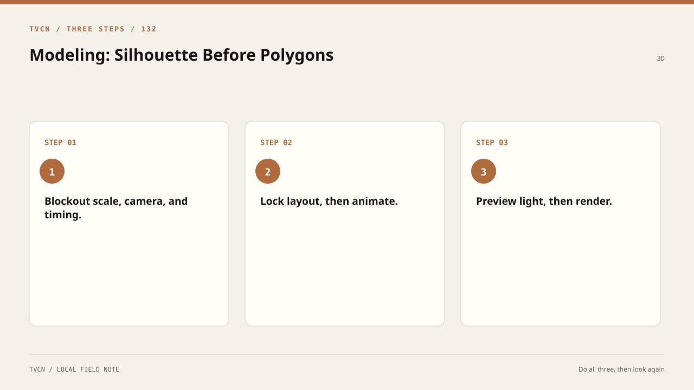

Modeling protects silhouette and thickness
Check the silhouette: fill the model black—can you still recognize the character? Then thickness: bevels at edges, volume at joints. If the silhouette fails, detail will not identify it.
Start with big planes, add edges gradually; do not begin with pores. Every detail pass returns to the silhouette check.
Limits
Polygon count is not precision. Round what should be round, hard what should be hard; polygons in unseen places only slow render.
Modeling: silhouette, topology, UV — in that order
The first acceptance test for a model is not polygon count; it is silhouette. Put it on a black background. If the outline does not tell you what it is, clean topology will not save it.
| Stage | Check | Cost to redo |
|---|---|---|
| Silhouette | Front, side, back | Low; adjust the big forms |
| Topology | Joint loops, bend test | Medium; rewire |
| UV | Seam placement, texel density | High; re-unwrap |
| Detail | Bevels, wear, bumps | Highest; found after baking |
Project-level checks
- Block out proportions and camera relationship before topology. Do not sculpt detail on wrong proportions.
- Use at least three edge loops at joints; test elbow, knee and shoulder separately instead of relying on a smooth modifier.
- Hide UV seams in less visible places; unify texel density with a checker; name multiple UV sets.
- Bevel late, but before baking. Bevel after baking and the normals no longer match.
If a model appears for two seconds and is not in close-up, skip the full high-poly pipeline. Use a mid-poly model plus normal maps and give the time to the shot.
Three-step flow

On set
Check the silhouette first: render the model black and see if the shape reads. Then subdivide and spend polygons by camera distance.
Do this
Modeling reads silhouette before polygon count; a wrong outline never looks right with more subdivisions.
- Render the model black and check the silhouette.
- Subdivide only after the outline identifies the character.
- Allocate polygons by shot distance: more close, fewer far.
Avoid
Do not fix a silhouette with subdivision; more polygons will not make it recognizable.
Image note. Covers, diagrams and step images on this page are editorial illustrations or structure diagrams, not photographs of a test performed here; they are not evidence of measured gear performance. Where an image is AI-assisted, the caption says so. Read the test conditions in the text before treating an image as proof.